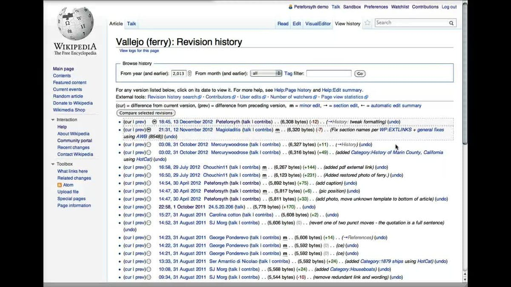

How can I track the changes I've made to articles?
Use the "View history" tab to see all edits. Compare revisions to see differences. Add articles to your watchlist for notifications. Monitor talk pages for discussions about changes.

After you click view history you will be directed to the history of your contributions made to the wikipedia.It simillarly looks like the below image
 Any other queries